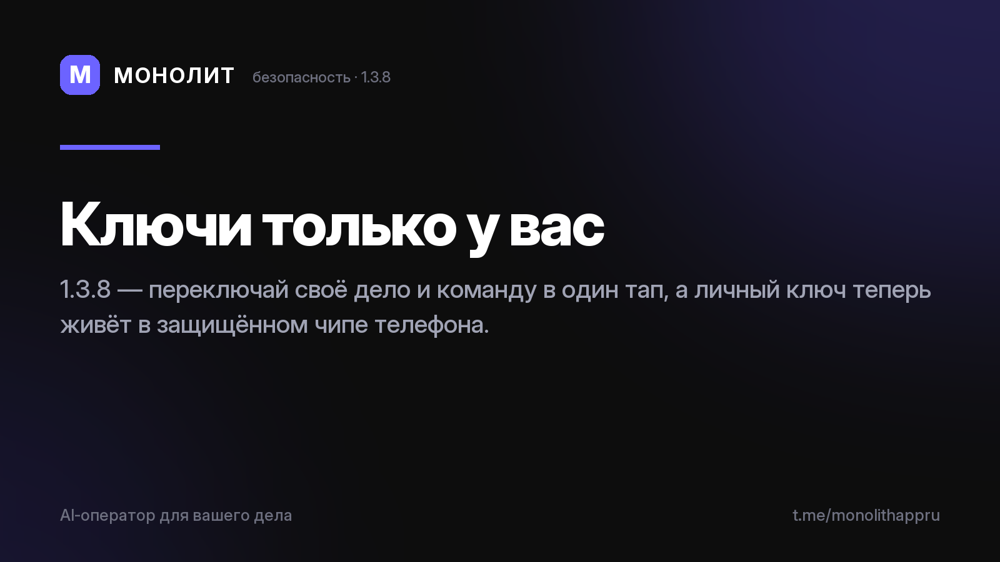

Дневник разработки · 08.07.2026
Своя база, команда и персональные ключи (1.3.8)

Обновление 1.3.8 🔐
Два шага под капотом — оба про доверие к твоим данным.
Своя база ↔ Команда — в один тап
Профиль → Команда и доступ → «Активная база». Переключайся между личным делом и общей базой команды, не теряя ни то, ни другое: личная база и переписка с ассистентом остаются на месте всегда. Проверено на живом устройстве в обе стороны.
Персональные ключи в «железе»
Приложение теперь заводит на каждом устройстве личный ключ прямо в защищённом чипе телефона — там же, где банк держит свои. Ключ не покидает чип, скопировать его нельзя. Это фундамент, чтобы дальше базу команды мог открыть только тот, кто в ней реально состоит, а украденный файл базы был бесполезен без живого доступа. Сам «замок» — следующий шаг.
Zero-Knowledge как был: сервер видит только шифроблоки, прочитать твоё дело не может никто, кроме тебя.
Бета — в личку по запросу, бесплатно. Приложение в RuStore. Вопросы — @sbphotoshoter.
МОНОЛИТ — учёт заказов, клиентов и денег одной фразой. Windows и Android, бесплатная бета.
Скачать Читать канал